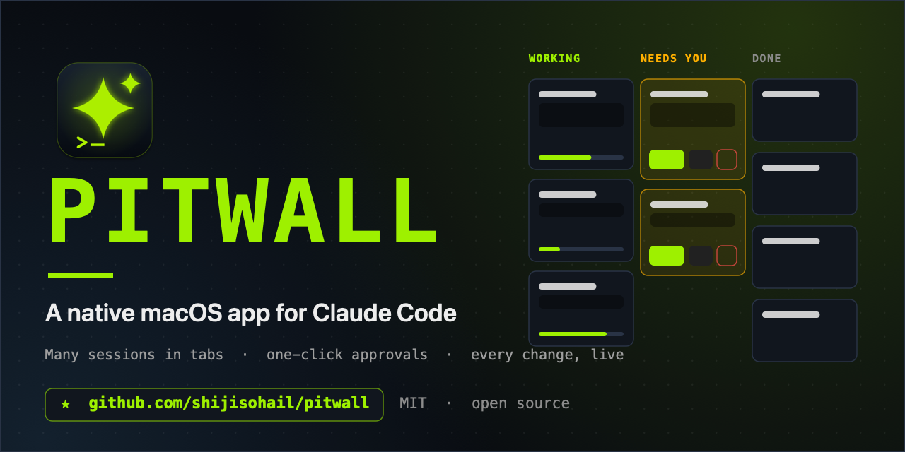

The pit wall for your
Claude Code sessions
Pitwall is a free, open-source Mac app for Claude Code. Run many sessions at once in tabs, approve tool requests in one click, and watch every change land.
v1.0.0 · macOS 26+ · Apple silicon and Intel · MIT license · no telemetry
Everything Claude Code is doing, on one board
Pitwall drives your own claude CLI, so your login, settings, skills, plugins and MCP servers all carry over.
Pit Wall board
Every session as a card in Working, Needs you and Done today, with a live feed of recent steps, to-do progress and cost.
Approve in one click
Tool permissions, Claude's questions and plan approval appear as cards, with "always allow" for the commands you trust.
Tabs, many sessions at once
Browser-style tabs. Closing a tab never stops a session; it keeps working in the background.
Your real history
Reads Claude Code's own transcripts, so terminal sessions appear in Pitwall and the other way round. Sessions running in a terminal update live.
Live Changes inspector
A live diff of every file Claude edits, plus the plan, context usage and files touched, beside the conversation.
Open only what you choose
Pitwall shows and loads just the project folders you open. Closing one hides it; nothing is ever deleted.
Every command, native where it matters
A slash menu with all your commands and skills, @ file mentions, ! shell commands and image paste.
Private by design
No telemetry, no accounts, and no network connections of its own. Transcripts stay on your Mac.
Install
Requires macOS 26 (Tahoe) or later and Claude Code, installed and signed in.
- Download the latest
.dmgand open it. - Drag Pitwall onto Applications.
- Open it. The first time, macOS says it can't verify the developer, because this open-source build is not notarized. Open System Settings → Privacy & Security and click Open Anyway, or run
xattr -dr com.apple.quarantine /Applications/Pitwall.app. - Click Choose Folder… and pick a project.
Prefer to build it yourself? Clone the repository and run Scripts/build.sh run. A copy you build on your own Mac never shows the warning.
FAQ
Does Pitwall replace Claude Code?
No. It is a front end. Your claude CLI does all the work; Pitwall gives you a board, tabs and one-click approvals around it.
Does it cost anything or need a separate login?
No. It is free and uses the Claude Code installation and account you already have.
Is it affiliated with Anthropic?
No. Pitwall is an independent community project. "Claude" and "Claude Code" are trademarks of Anthropic.
Is my code or conversation sent anywhere?
Pitwall makes no network connections of its own and has no telemetry. Your prompts go to Anthropic only through the claude process, under Claude Code's own terms.
Why isn't it in the Mac App Store?
Launching your CLI and reading ~/.claude are impossible inside the App Sandbox, which the App Store requires.